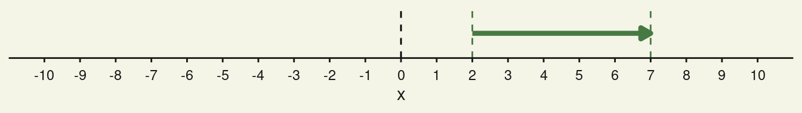
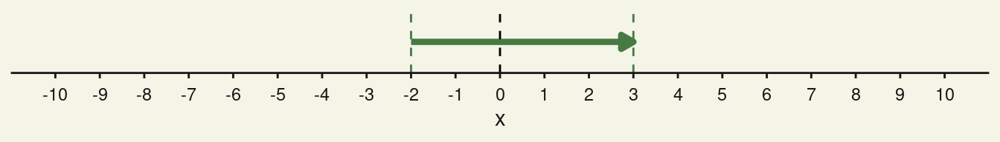
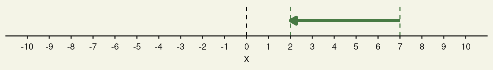
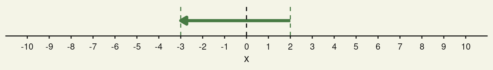
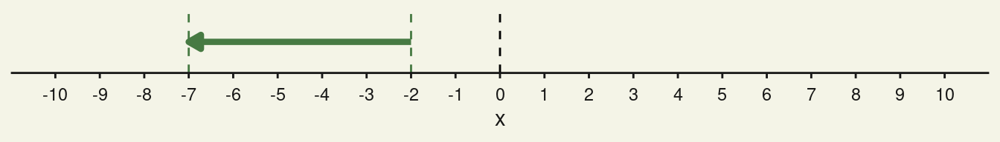
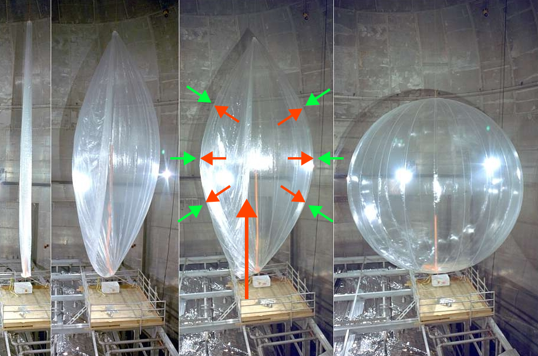

\gdef\sub#1{_{\mathrm{#1}}} \gdef\unit#1{\mathrm{#1}} \gdef\celsius{\unit{°C}} \gdef\joule{\unit{J}} \gdef\kelvin{\unit{K}} \gdef\kilogram{\unit{kg}} \gdef\liter{\unit{L}} \gdef\milliliter{\unit{mL}} \gdef\meter{\unit{m}} \gdef\mole{\unit{mol}} \gdef\newton{\unit{N}} \gdef\pascal{\unit{Pa}} \gdef\squaremeter{\meter^2} \gdef\cubicmeter{\meter^3} \gdef\newtonperkilogram{\frac{\newton}{\kilogram}} \gdef\joulepermole{\frac{\joule}{\mole}} \gdef\jouleperkilogram{\frac{\joule}{\kilogram}} \gdef\jouleperkelvin{\frac{\joule}{\kelvin}} \gdef\jouleperkilogramperkelvin{\frac{\joule}{\kilogram\,\kelvin}} \gdef\joulepermoleperkelvin{\frac{\joule}{\mole\,\kelvin}}
1 Ein tieferer Blick
In den Kennzeichen des Lebens haben wir festgestellt, dass Leben Energie braucht. Wir haben gesehen, dass der Metabolismus die abbauenden Wege mit den aufbauenden verbindet. Das ist der Motor des Lebens. Der Metabolismus gewinnt eine besondere Art von Energie aus den katabolen Wegen, die sowohl für die Lebensprozesse als auch für die anabolen Wegen oder das Wachstum bereitgestellt wird.
1.1 Worum geht es hier?
In den folgenden Modulabschnitten fangen wir an, tiefer in den Motor hineinschauen. Im ersten Schritt legen wir die Grundlagen der Thermodynamik an. Die Thermodynamik ist ein Teilbereich der Naturwissenschaften, der sich mit Wärme, Arbeit, Temperatur und ihren Beziehungen zur Energie beschäftigt. Die Thermodynamik spielt für unsere besondere Form der Lebensenergie ein große Rolle. Zuerst geht es jedoch darum, Energie, Arbeit, und Wärme zu verstehen.
1.2 Dieselbe oder die gleiche Energie?
Alle Energie, einschließlich der in der Bioenergetik gebrauchten Energie, wird in der Einheit Joule [\joule] angegeben. Gibt es unterschiedliche Energieformen? Handelt es sich um dieselbe Energie, wenn wir Arbeit mit Wärme vergleichen? Du wirst sehen, dass beide zu unterschiedlichen Ergebnissen führen.
2 Zustandsänderungen
Bevor wir loslegen sollten wir noch eine Sache klären. In der Thermodynamik betrachten wir oft Zustände und Zustandsänderungen von Materie und Energie. Wenn wir zum Beispiel einen Anfangszustand mit einem Endzustand vergleichen, dann interessiert uns oft der Unterschied einer bestimmten Größe, die sich zwischen diesen Punkten ändert.
Eine materielle Änderung ist zum Beispiel eine Änderung des Drucks, des Volumens, der Temperatur usw. Ein energetische Zustandsänderung kann die mechanische Arbeit oder Wärmeentwicklung sein.
2.1 Dieses komische \Delta
In der Sprache der Mathematik werden Unterschiede als Differenzen bezeichnet und haben ein eigenes Symbol \Delta. Das Symbol nennt sich Delta; ein Buchstabe des griechischen Alphabets. Angenommen uns interessiert eine beliebige Eigenschaft, der wir den Namen x geben. Dann würde der Unterschied zwischen dem Anfangspunkt oder -zustand x\sub{Anfang} und dem Endpunkt oder -zustand x\sub{Ende} als
\Delta x = x\sub{Ende} - x\sub{Anfang}
geschrieben werden. Streng genommen dürfen wir das \Delta nur für spezielle Fälle anwenden; zum Beispiel wenn die Änderung linear ist. In den nächsten Lernmodulen verhalten sich viele Sachen fast linear und wir wenden das \Delta.
Das x ist hier nur ein Platzhalter für andere Variablen und kann dadurch ersetzt werden. Zum Beispiel, ein Kraftunterschied wäre \Delta F = F\sub{Ende} - F\sub{Anfang}, ein Masseunterschied wäre \Delta m = m\sub{Ende} - m\sub{Anfang}. Wichtig ist die Tatsache, dass der Unterschied der die Veränderung durch zwei Zustände beschrieben wird.
2.2 Warum gibt es das \Delta?
Um zu verstehen, welche grandiose Bedeutung das Delta hat, schau Dir die folgenden Beispiele mal in Ruhe an.
2.2.1 Bewegung von links nach rechts
Wenn Du Dich von links nach rechts auf einem Zahlenstrahl bewegst, dann ist x\sub{Anfang} < x\sub{Ende}. Schau Dir die folgenden Beispiele an.


2.2.2 Bewegung von rechts nach links
Wenn Du Dich von rechst nach links auf einem Zahlenstrahl bewegst, dann ist x\sub{Anfang} > x\sub{Ende}. Schau Dir an, was jetzt passiert.



2.2.3 Vorteile des Deltas
Ich hoffe, Du hast einen Muster aus den obigen Zahlenstrahlen und den dazugehörigen Deltas mitgenommen. Hier sind die Vorteile des Deltas zusammengefasst:
- Das Delta zeigt den Betrag oder die Länge zwischen Anfang und Ende an.
- Das Vorzeichen des Deltas zeigt immer die Richtung an, in der sich etwas bewegt.
- Der Betrag des Deltas ist unabhängig vom Ort des Anfangs und des Endes und zeigt immer die richtige Richtung und den richtigen Betrag an.
3 Arbeit
In der Mechanik ist Arbeit W definiert als Bewegung gegen eine entgegengesetzt wirkende Kraft F. Wenn Du diese Kraft F über eine Strecke \Delta s aufbringst, dann leistest Du die Arbeit
W = -F \Delta s \tag{1}
Die Kraft gibst Du in Newton [\newton] an und die zurückgelegte Strecke \Delta s in Meter [\meter]. Die Arbeit selbst besitzt die Einheit Joule [\joule]. Merke Dir: Arbeit besitzt dieselbe Einheit wie Energie. Das \Delta s sagt aus, dass die Arbeit beim Weg zwischen Anfangspunkt s\sub{Anfang} und Endpunkt s\sub{Ende} geleistet wird.

3.1 Warum das Minuszeichen?
Das Minuszeichen ist vorhanden, weil wir die Arbeit aus Sicht eines Systems betrachten. Wenn das System Arbeit verrichtet, dann verliert es einen Teil der eigenen Energie durch diese Arbeit. Und Verlieren oder abgeben heißt immer Negativ. Also brauchen wir ein Minuszeichen.
WarnungKlapp auf, um ein sehr ausführlich besprochenes Beispiel zu sehen
Stell Dir vor, Du willst im Schulgebäude die Treppe vom Erdgeschoss zu Deinem Klassenzimmer im ersten Stock hochgehen. Dabei setzt Du die Anfangshöhe im Erdgeschoss auf h\sub{Anfang} = 0\;\meter und die Endhöhe im ersten Stock auf h\sub{Ende} = 3\;\meter. Es geht dabei nur um Dich; und Du wiegst m = 67\;\kilogram. Wie wendest Du Gleichung 1 an, um Deine geleistete Arbeit, zu berechnen?
Nun, zuerst mußt Du die einzelnen Buchstaben den physikalischen Größen zuordnen. Fangen wir mit der Kraft F an. Die Kraft, die Du aufbringen musst, ist offensichtlich so groß, dass es Deine eigene Gewichtskraft F\sub{g} entsprechen muss. Darüberhinaus musst Du den Ortsfaktor oder die Erdbeschleunigung g = 9.81\;\newtonperkilogram berücksichtigen. Das ergibt nun für die Kraft aufgerundet
F = F\sub{g} = m g = 67\;\kilogram \cdot 9.81\;\newtonperkilogram \approx 657\;\newton.
Die zurückgelegte Strecke \Delta s ist der Höhenunterschied. Das bedeutet
\Delta s = \Delta h = h\sub{Ende} - h\sub{Anfang} = 3\;\meter - 0\;\meter = 3\;\meter.
Nun setzen wir alles in Gleichung 1 ein:
W = -F \Delta s = -F\sub{g} \Delta h = -657\;\newton \cdot 3\;\meter = -1971\;\joule
Wir haben gesagt, dass das Minuszeichen in Gleichung 1 die Arbeit auf Dich bezieht. Wenn Du also hochsteigst, dann musst Du diese Arbeit aufbringen. Das bedeutet, sie geht Dir verloren und deswegen Minus.
Jetzt stell Dir vor, Du willlst vom ersten Stock h\sub{Anfang} = 3\;\meter ins Erdgeschoss h\sub{Anfang} = 0\;\meter heruntergehen. Deine Gewichtskraft bleibt dieselbe aber der Höhenunterschied ist nun
\Delta h = h\sub{Ende} - h\sub{Anfang} = 0\;\meter - 3\;\meter = -3\;\meter.
Daraus ergibt sich die Arbeit
W = -F\sub{g} \Delta h = -657\;\newton \cdot (-3\;\meter) = +1971\;\joule.
Was ist passiert? Die Arbeit ist positiv geworden und dass heisst, dass Du Energie gewinnst. Wie ist denn das möglich? Stell Dir nun weiterhin vor, dass anstatt der Treppe ein Rutschbahn da ist. Wenn Du herunter gleitest, dann gewinnst Du Bewegungsenergie. Oder stell Dir vor statt der Rutschbahn ist ein Seil an dem ein Gewicht hängt. Wenn Du fest am Seil hängend herunterfällst, dann ziehst Du auf der anderen Seit das Gewicht hoch. Was auch immer Du tust, Du kannst auf einmal Arbeit lesiten. Und die entspricht genau der Arbeit, die Du beim Hochgehen geleistest hast.
Zum Schluss ein Wort zum Delta. Was würde passieren, wenn Du die Tatsache beachtest, dass die Schule auf einer Höhe von 322\;\meter gebaut ist? Damit befindet sich das erste Stockwerk auf einer Höhe von 325\;\meter. Um die Unabhängigkeit des Deltas vom Ort zu demonstrieren, können wir die absoluten Höhen benutzen. Beim Herunterrutschen würde der Höhenunterschied
\Delta h = h\sub{Ende} - h\sub{Anfang} = 322\;\meter - 325\;\meter = -3\;\meter.
Dieser Wert ist absolut derselbe wie beim willkürlichen Festlegen des Erdgeschosses auf h\sub{Anfang} = 0\;\meter. Durch die absoluten Werte verändert sich der Wert der Arbeit ebenfalls nicht. Das ist eine wichtige Erkenntnis für die Thermodynamik, für die die absoluten Werte von Anfangs- und Endpunkt ebenfalls nicht wichtig sind.
3.2 Expansionsarbeit
Es neben der grundsätzlichen mechanischen Arbeit andere Formen der Arbeit, die von Gleichung 1 abgeleitet werden. Eine dieser Arbeiten ist die Volumenarbeit. Das ist diejenige Arbeit, die das System leistet, wenn es sich gegen einen äußeren Druck p aufbläht.

Die Expansionsarbeit ist definiert als Produkt aus dem Volumenunterschied zwischen Anfang und Ende \Delta V = V\sub{Ende} - V\sub{Anfang} und dem äußeren Druck p berechnet.
W = -p \Delta V. \tag{2}
Es ist gar nicht so schwer, die Expansionsarbeit aus der mechanischen Arbeit abzuleiten. Das ist zwar kein Lerninhalt aber wir können darüber nachdenken, es zu einem zu machen. Hierbei geht es um Herleitungen. Sacehn, die sich aus bereits bekannten Sachen ergeben. Wenn Du mutig bist, wirf einen Blick in den nächsten blauen Kasten.
HinweisKlapp auf, damit Du eine Herleitung mit Deinen eigenen Augen siehst.
Du bist vielleicht mutig; aber warte, bis Du die Dröhnung kriegst.
Die Aufgabe ist also aus Gleichung 1, Gleichung 2 zu gewinnen. Zuerst erinnerst Du Dich daran, wie der Druck p definiert ist. Druck, in Pascal [\pascal] angegeben, ist Kraft F durch die Fläche A auf die die Kraft wirkt.
p = \frac{F}{A}
Die Kraft verwendet wie immer die Einheit Newton [\newton] und die Fläche die Einheit Quadratmeter [\squaremeter]. Um es in Gleichung 1 einzusetzen, müssen wir die Kraft F durch irgendeinen Ausdruck für den Druck ersetzen. Das kriegen wir hin, wenn wir die obige Gleichung umstellen zu
F = p A.
Das setzen wir in Gleichung 1 ein und es ergibt sich
W = - p A \Delta s. \tag{3}
Wie kommst Du jetzt zu der Volumenveränderung? Da steht eine Fläche A mal einer Strecke \Delta s. Wenn Du jetzt einen dreidimensionalen geometrischen Körper nimmst, dann kannst Du sehr oft sein Volumen als Grundfläche mal der Höhe angeben.
V = A h
Und genau das ist es auch, was wir hier machen. Jedoch mit einem kleinen Unterschied: wir betrachten einen Unterschied im Volumen dadurch, dass wir es variabel machen. Das erreichen wir, indem wir die Höhe als Strecke s angeben und den Unterschied in der Strecke als Volumenunterschied ausgeben.
A \Delta s = A \Delta h = \Delta V
Und wenn wir das in Gleichung 3 einsetzen, dann ergibt sich genau Gleichung 2.
Wenn wir mechanische Arbeit ausführen, dann schieben, ziehen, drehen, usw. etwas. Das Etwas kann alles sein: eine Schubkarre, ein Schlitten oder ein Basketball. Und das Etwas ist aus kleinen Teilchen wie Moleküle oder Atomen aufgebaut. Ein für später wichtiger Aspekt der mechanischen Arbeit ist, dass sich unter dem Einfluss der Arbeit alle Teilchen in dieselbe Richtung bewegen. Im Folgendem Kasten ist ein Beispiel gerechnet.
WarnungHier versteckt sich ein ausführlich besprochenes Beispiel
Du bläst einen Luftballon auf. Das Anfangsvolumen ist V\sub{Anfang} = 10\;\milliliter und im voll aufgeblasenen Zustand passen im Luftballon V\sub{Ende} = 10\;\liter. Welche Expansionsarbeit leistest Du?
Du weißt, dass 1\;\cubicmeter genau 1000\;\liter entspricht. Um im SI System zu rechnen, müssen wir die Volumeneinheiten umrechnen. Es ist
V\sub{Anfang} = 10\;\milliliter \cdot \left( \frac{1}{1000}\;\frac{\liter}{\milliliter} \right) \cdot \left( \frac{1}{1000}\;\frac{\cubicmeter}{\liter} \right) = \frac{10}{10^6}\;\cubicmeter = 10^{-5}\;\cubicmeter.
Das Endvolumen ist analog dazu
V\sub{Ende} = 10\;\liter \cdot \left( \frac{1}{1000}\;\frac{\cubicmeter}{\liter} \right) = \frac{10}{10^3}\;\cubicmeter = 10^{-2}\;\cubicmeter.
Der Volumenunterschied ist
\begin{split} \Delta V &= V\sub{Ende} - V\sub{Anfang} \\ &= 10^{-2}\;\cubicmeter - 10^{-5}\;\cubicmeter \\ &= 0.01\;\cubicmeter - 0.00001\;\cubicmeter \\ &\approx 0.01\;\cubicmeter. \end{split}
Da das Endvolumen Tausend Mal größer ist als das Anfangsvolumen, können wir das Anfangsvolumen vernachlässigen. Wir setzen die Volumendifferenz gleich dem Endvolumen. Die Expansionsarbeit wird gegen den Atmosphärendruck p\sub{atm} = 101325\;\pascal geleistet und ist aufgerundet
W = -p\sub{atm} \Delta V = -101325\;\pascal \cdot 0.01\;\cubicmeter \approx 1013\;\joule
Auch hier macht das Minuszeichen die Arbeit zu Deinem Verlust; sie geht Dir verloren; also Minus.
Was passiert, wenn Du jetzt die Luft aus dem aufgeblasenen Luftballon heraus lässt? Dabei nimmst Du an, dass das Endvolumen dem Anfangsvolumen vor dem Aufblasen entspricht. Der Volumenunterschied ist jetzt
\begin{split} \Delta V &= V\sub{Ende} - V\sub{Anfang} \\ &= 10^{-5}\;\cubicmeter - 10^{-2}\;\cubicmeter \\ &= 0.00001\;\cubicmeter - 0.01\;\cubicmeter \\ &\approx -0.01\;\cubicmeter. \end{split}
Auch hier vernachlässigen wir das Endvolumen, weil es so klein ist. Jetzt leistest Du folgende Arbeit
W = -p\sub{atm} \cdot \Delta V = -101325\;\pascal \cdot \left( - 0.01\;\cubicmeter \right) \approx +1013\;\joule
Oha, jetzt ist die Arbeit positiv und kommt Dir als System zugute. Das bedeutet nicht, dass Du jetzt mehr Power hast natürlich. Das bedeutet eher, dass Du diese im aufgeblasenen Luftballon gespeicherte Arbeit nutzen könntest. Zum Beispiel in dem Du die ausströmende Luft verwenden könntest, um einen Propeller anzutreiben, der eine Masse hoch hebt.
4 Wärmeenergie
Wenn Wärmeenergie in einem geschlossenem System eingeleitet wird, dann führt es zur Erwärmung des Systems. Gleichzeitig wird es in der Umgebung des Systems kalt. Eine solche Reaktion nennen wir endotherm. Wenn ein System aber Energie abgibt, dann kühlt es ab. Die abgegeben Energie fließt in die Umgebung wo es wärmer wird. Solche Reaktionen nennen wir endotherm.
4.1 Wie wird Wärmeenergie genutzt?
Wenn die Temperatur steigt, nimmt bei Gasen die Fluggeschwindigkeit der Teilchen zu. Bei Flüssigkeiten und Feststoffen nehmen die Vibrationen der Teilchen zu. Das ist jetzt wichtig:
WichtigOrdnung gegen Chaos
Im Gegensatz zur mechanischen Arbeit bei der sich Teilchen koordiniert in dieselbe Richtung bewegen, führt eine Temperaturzunahme zu einer chaotischeren Bewegung der Teilchen und umgekehrt.
Du kannst unmöglich die Geschwindigkeit aller Teilchen oder deren Vibration messen. Zwar gibt es dafür theoretische Werkzeuge als auch Messverfahren, aber für viele Zwecke ist das Overkill. Was Du wissen musst ist, dass der Austausch von Wärmeenergie immer zu Temperaturänderungen führt.
Wenn Du einen Stoff oder ein Objekt von der Anfangstemperatur T\sub{Anfang} auf die Endtemperatur T\sub{Ende} erwärmen willst, dann brauchst Du die Wärmeenergie
Q = C_p \Delta T. \tag{4}
Diese muss in den Stoff oder in das Objekt eingebracht werden. Dabei ist C\sub{p} die Wärmekapazität mit der Einheit Joule pro Kelvin1 [\jouleperkelvin]. Die Wärmekapazität sagt etwas darüber aus, wie viel Wärmeenergie notwendig ist, um das gesamte System oder den gesamten vorliegenden Stoff zu erwärmen oder abzukühlen.
WichtigWärmeenergie bei konstantem Druck
Wir betrachten jetzt den Austausch von Wärmeenergie bei konstantem Druck. Das ist für die meistent alltäglichen Veränderungen der Fall. Wir werden nur kurz anschneiden, dass es eine Wärmekapazität bei konstantem Volumen gibt; diese interessiert uns aber zuerst nicht.
4.2 Wärmekapazität bezogen auf Masse oder Stoffmenge
Bei gleichförmigen2 Stoffen und Objekten lässt sich die Wärmekapazität praktischerweise auf Masse oder Stoffmenge beziehen.
C_{p,m} ist die spezifische Wärmekapazität bei konstantem Druck. Sie hat die Einheit [\jouleperkilogramperkelvin]. Um die gesamte Wärmekapazität zu bestimmen muss mit der Masse m multipliziert werden C_p = m C_{p,m}
C_{p,n} ist die molare Wärmekapazität und besitzt die Einheit [\joulepermoleperkelvin]. Die gesamte Wärmekapazität ist dann das Produkt aus Stoffmenge n und molarer Wärmekapazität C_p = n C_{p,n}.
WarnungSchau Dir dieses Beispiel mal an, um Wärme zu verstehen.
Du erwärmst einen Kilogram Wasser um einen Grad von 25\;\celsius auf 26\;\celsius; also von 298\;\kelvin auf 299\;\kelvin. Rechne mit einer spezifische Wärmekapazität des Wassers von 4184\;\joulepermoleperkelvin. Welche Wärmeenergie musst Du aufbringen?
Am Anfang ordest Du die Sachen nach Bekannt und Unbekannt, damit Du weisst, was zu tun ist. Das Wort “Wärmeenergie” ist gefallen. Damit ist klar, dass Gleichung 4 anzuwenden ist. Darüberhinaus ist das Wort Masse gefallen. Damit weisst du, Du musst die spezifische Wärmeenergie nutzen, damit Du die gesamte Wärmeenergie berechnen kannst. Somit kombinierst Du Gleichung 4 mit der spezifischen Wärmekapazität zu
Q = C_p \Delta T = m C_{p,m} \Delta T.
Jetzt ist Dir klar, dass Du das Q suchst und alles rechts vom Gleichheitszeichen ist bekannt. Du setzt ein und erhälst
Q = m C_{p,m} \Delta T = 1\;\kilogram \cdot 4184\;\jouleperkilogramperkelvin \cdot 1\;\kelvin = +4184\;\joule
Jetzt betrachte das Vorzeichen. Es wurde nur durch
\Delta T = T\sub{Ende} - t\sub{Anfang} = 299\;\kelvin - 298\;\kelvin = 1\;\kelvin
bestimmt. Das heißt, wenn Du das System Wasser betrachtest, dann hat es Energie dazugewonnen. Wie wäre es, wenn Du es abkühlst? Dann wäre
Q = m C_{p,m} \Delta T = 1\;\kilogram \cdot 4184\;\jouleperkilogramperkelvin \cdot \left( -1\;\kelvin \right) = -4184\;\joule
und das System Wasser hätte Energie verloren.
Fußnoten
Kelvin ist die absolute Temperaturskala, die in Naturwissenschaft und Technik verwendet wird. Ein Grad Kelvin entspricht genau einem Grad Celsius. Aber die Kelvinskala legt Null Grad Kelvin am absoluten Nullpunkt fest. Dagegen legt die Celsiusskala den Nullpunkt am Gefrierpunkt des Wassers auf der Erde fest.↩︎
Ein gleichförmiger Stoff oder ein gleichförmiges Objekt sind überall innerhalb ihrer Volumina gleich aufgebaut und geschaffen.↩︎